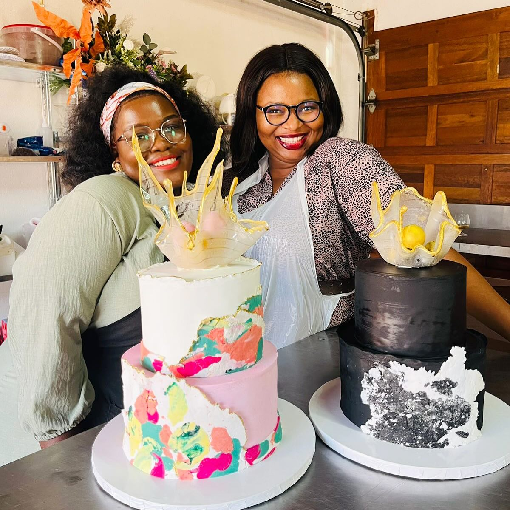

About Auntie
“Auntie’s Oven: Where Every Crumb Tells a Story”
At Auntie’s Oven, we believe that baking is an art form—a delightful blend of science, creativity, and love. Our ovens hum with anticipation, turning simple ingredients into mouthwatering masterpieces. Whether it’s a flaky croissant, a gooey chocolate chip cookie, or a perfectly layered cake, each treat has a tale to tell.
Our Promise: Freshness and Flavor
🥐 Croissants: Our buttery croissants are hand-rolled and baked to golden perfection. Close your eyes, take a bite, and let the delicate layers transport you to a Parisian café.
🍪 Cookies: From classic chocolate chip to exotic matcha, our cookies are little rounds of happiness. Dunk them in milk or savor them with a cup of coffee—the choice is yours.
🍰 Cakes: Celebrate life’s sweet moments with our custom cakes. Birthdays, weddings, or just because—you name it, we’ll bake it. Our secret ingredient? Love, of course.
Meet Auntie
Behind every crumb at Auntie’s Oven is a passionate baker—Auntie herself. With flour-dusted hands and a heart full of warmth, she kneads, mixes, and sprinkles magic into every recipe. Auntie’s Oven isn’t just a bakery; it’s a cozy corner where memories are baked fresh daily. Auntie's journey is in a small kitchen and will soon grow into a beloved local bakery. Join her and share our love for baking with the community
Visit Us
📍 Location: Find us nestled in the heart of Polokwane, where the aroma of freshly baked bread lures you in.
📞 Contact: Have a special order or a craving? Call Auntie directly at +27 123 456 789.
Join Our Baking Community
Follow us on social media for behind-the-scenes glimpses, baking tips, and mouthwatering photos. Let’s share the joy of all things doughy and delicious!
Feel free to customize this message to match Auntie’s personality and the unique vibe of your bakery. Happy baking! 🍰🍞🎂.